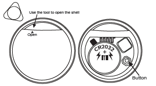

Cómo funciona tu Smart Tag
Cuando el objeto sale del rango Bluetooth, el sistema pasa automáticamente a utilizar la red Buscar (Find My): otros dispositivos Apple cercanos detectan la señal del tag y actualizan su ubicación de forma anónima y segura, permitiendo al usuario ver dónde fue visto por última vez en un mapa.
Conexión Rápida
- Activá Bluetooth en el iPhone.
- Retirá la lengüeta plástica de la batería tirando de ella hacia afuera para encender el Smart Tag.
- Escanea el Codigo QR que se encuentra abajo que te llevara a la app Find My (Buscar).
Conexión Manual
- Abrí la app Find My (Buscar).
- Activá Bluetooth en el iPhone.
- Retirá la lengüeta plástica de la batería tirando de ella hacia afuera para encender el Smart Tag.
- Acercá el Smart Tag al iPhone.
- En Find My, andá a Artículos, tocá el botón "+" y elegí "Agregar otro artículo" (Other Supported Item).
- Seguí los pasos que aparecen en pantalla para completar la vinculación.
- Asignale un nombre y un ícono para identificarlo.
Como usar el boton de acción

- Encendido: Pulse una vez el boton, el dispositivo se encuentra encendido.
- Apagado: Pulse y mantenga el boton por 5 segundos, el dispositivo se encuentra apagado.
- Reseteo: Presione el boton 4 veces rapido por 3 segundos y luego presionelo devuelta 5 veces mas hasta que escuche un "beep", el dispositivo se reinicio.
Manual completo (PDF)
Cómo funciona tu smart tag
Una vez que el tag queda fuera del alcance Bluetooth, Find Hub comienza a buscar señales a través de otros dispositivos Android que pasen cerca del tag. Cuando eso ocurre, la ubicación se actualiza en la app, permitiendo rastrear el objeto incluso a larga distancia, dependiendo de la cobertura de la red de usuarios.
Antes de usar
- Abra Google Play Store en su dispositivo Android.
- Busque la aplicacion "Find Hub".
- Verifique que el desarrollador sea Google LLC.
- Instale la aplicacion.
Notas importantes
- Requisitos del sistema: Requiere Android 9 o superior, y el dispositivo debe tener sesión iniciada en una cuenta de Google.
- Aplicación Find Hub de Google: La app Find Hub debe estar actualizada a la última versión disponible en Google Play Store, y los Servicios de Google deben estar actualizados en el teléfono. Para eso: Andá a Configuración de tu teléfono > Google > Todos los servicios > Servicios del sistema > Servicios de Google Play y tocá Actualizar.
- Configuración de permisos: Asegurate de que los permisos de “Servicios de ubicación” y “Administrador del dispositivo” estén habilitados.
- Advertencia de seguridad: Evitá descargar archivos APK desde fuentes desconocidas para prevenir riesgos de malware.
Conexión
- Activá Bluetooth en tu teléfono.
- Descargá la aplicación Find Hub o Encontrar mi dispositivo desde Play Store.
- Retirá la lengüeta plástica de la batería, tirando de ella hacia afuera, para encender el Smart Tag.
- Acercá el Smart Tag al celular.
- Abrí Find Hub o Encontrar mi dispositivo.
- Completá la configuración siguiendo los pasos en pantalla.
- Asignale un nombre.
Como usar el boton de acción

- Encendido: Pulse una vez el boton, el dispositivo se encuentra encendido.
- Apagado: Pulse y mantenga el boton por 5 segundos, el dispositivo se encuentra apagado.
- Reseteo: Presione el boton 4 veces rapido por 3 segundos y luego presionelo devuelta 5 veces mas hasta que escuche un "beep", el dispositivo se reinicio.